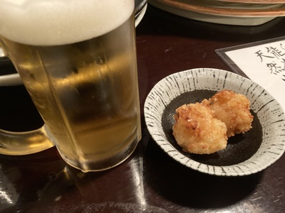
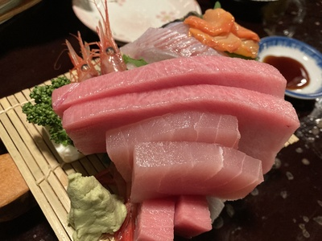
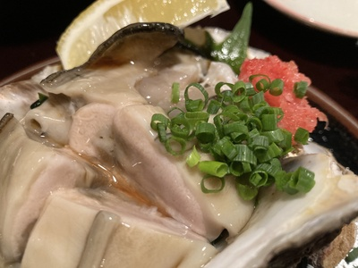
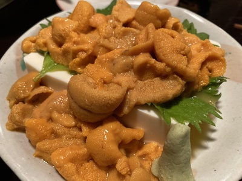

居酒屋:とっくりや
とっくりや
2024/06/15
金沢駅周辺の居酒屋とっくりやに行ってきました。
人気店ですが、2週間前に予約の電話をかけると、20時からなら空いているということでカウンター2名で予約をとることができました。😄
店に入ると、カウンターが8名ほど、4名座れるぐらいのテーブルが2つあり、席はほとんど埋まっていました。
時価ということでメニューには値段が書いてありませんでした😱とりあえず、ビール2つと刺身の盛り合わせ、岩がきを注文しました。
最初にビールとお通しのえびだんごが出てきました。

えびだんごはお通しなのに出来立てあつあつで、中身もプリプリのえびが入っていて美味しい😁
次に出てきたのは一番食べたかったお刺し身盛り。通称「刺身ジェンガ」と呼ばれていて、実際に見ると存在感が凄い😳

お刺身はトロ、カジキ？、マグロ、鯛、ブリ、甘エビ、赤貝、サザエ、ホタテが並べられ、豆腐も添えられていました。どれも新鮮肉厚でとっても美味しい。
その中でもトロがやっぱり一番でした。1枚の大きさ、肉厚がすごく、食べ応えがあり、大きいのに刺身にある繊維のようなものが無く、口の中で一瞬でとろけました😱
次に岩ガキが到着。岩ガキもボリュームがすごく、新鮮でプリプリでした。

最後に追加でうにを注文。海苔が添えられていて、海苔に巻いて食べましたが、甘くてとろけました。

どの品も新鮮で満足度の高いお店でした。
お値段は上の写真3品、ビール、日本酒合わせて合計で14,000円でした。
時価ということでびびっていましたが、満足度に比べるとリーズナブルに感じました。
お酒を飲みながら、美味しいお刺身が食べたい方にはオススメです😁